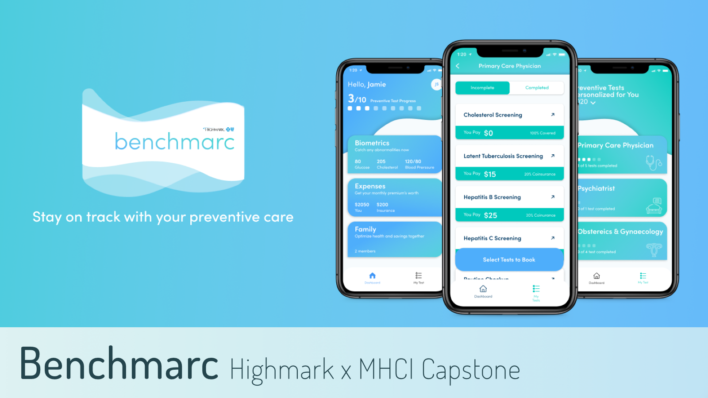

Corey Emery
Software Engineer and UX Researcher |Master of Human-Computer Interaction at Carnegie Mellon University
Design & User Research


An augmented reality solution to increase engagement with public art
Researched current engagement with public art in Pittsburgh and ways to encourage more meaningful interactions between people and the art. We designed an AR app that allows you to see facts and interesting info as hotspots on the art itself.

An online shopping app to personalize your options to your physical space
Designed a system leveraging built-in smartphone measuring tools to filter selections based on what you need and what fits your space. My team planned this around Construction Junction, a building materials donation and reuse center.
Software
An improved recovery logic for data from a major futures exchange
Worked on the core development team to improve how messages regarding data loss from a major futures exchange are processed and interpreted. This allows for better data recovery support for more trading symbols.

A responsive website built for an open-source game and animation tool
The Wick Editor is an online tool to allow elementary and middle school-aged students to create "games, animations, and everything in-between." I worked with their designer to implement their website to highlight their tool, tutorials, and community.

Data Science


A visualization of demographic trends in early 20th century Ireland
Collaborated with a PhD candidate in the Department of Statistics and Data Science in support of her thesis work. I developed a web-scraping tool and visualizations of demographic distributions such as name and religion in Ireland in 1901 and 1911.
Hi, I'm Corey!
I'm a developer who's passionate about coding, creating, and envisioning ways to use technology to better understand and enhance the human experience. I believe that the digital environment cannot exist in isolation, and strive to make systems that are more accessible, connected, and relevant to our lives.
My work has exposed me to various industries ranging from finance to education technology, and I've gained experience at all levels of the development stack and at each step of the user-centered design process. This allows me to snythesize knowledge from different domains to enhance a product and develop a clear course of action to successfully execute a vision.
Awards & Recognition
At Carnegie Mellon, I was a member of Phi Beta Kappa, an Andrew Carnegie Society Scholar, a Quantitative Social Science Scholar, and received College and University Honors.
Outside of Work
I am a passionate theatergoer, tennis fan, gym enthusiast, 1st degree black belt, and pub trivia regular. I've taken part in both Booth and Buggy at Carnegie Mellon, and performed on stage as a member of Scotch 'n' Soda Theater.